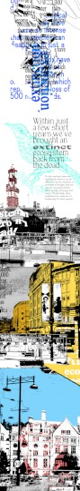
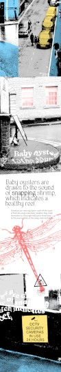
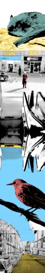
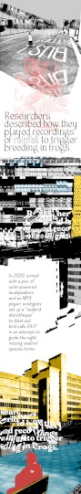
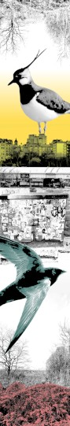
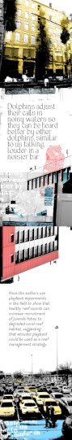
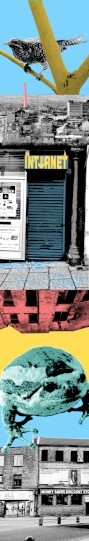
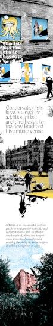
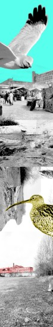

“No one told me that when i left home, the sounds of that particular past - during the formation of childhood and youth - would come back to haunt me; a distant call to return. And when that finally happened, the sounds had changed in its entirety - the familiar now an alien(ised) auditory landscape. To end the haunting was not possible - it never was to begin with.” ~ shi Blank, Oct 2024
LAGU MADU aims to appease this eldritch phenomena by playing a procedurally composed ambient soundtrack formed of sounds and field recordings by urban creatures and local wildlife.
LAGU MADU makes a comparison between the forced migration of fauna by violent displacement and the artist's own story of migrating to the UK by recreating the echoes from their past in Singapore combined with the now in Bradford.
It attempts to call attention to the disappearing sounds of nature and to reflect on the broader issue of biodiversity loss and the impact of human activities on the environment.
LAGU - a song
MADU - honey(pot)
It is an invocation for the past to reclaim the future.
Down To Earth exhibition at Trapezium Arts (12 Oct - 2 Nov 2024). Photos by shi Blank
LAGU MADU invites you to listen and experience at your own pace.
A composition of field recordings, local wildlife and urban creatures (humans) curated from an algorithm by the artist is played over two stereo channels, encouraging the viewer to move between the speakers and the installation or stay at a spot to experience the the sound and visual piece. Headlines of climate news relating to sound is sprawled across the main exhibition wall to resemble a murder board, linked together by red recycled local yarn. Five double sided prints (30cm by 2m) of recycled lining paper is hung from the ceiling, showcasing local species in the cities of Bradford and Singapore.
Each listen is a new experience, never the same.

Thanks to Kriss Blank for your unwavering support and everything in between.
Thanks to Bethany Clarkson (Yorkshire Wildlife Trust) for your consistent + timely responses.
Thanks to Caro Blount-Shah for the invitation to the Down To Earth exhibition at Trapezium Arts which initiated this project.
Mega thanks to Xeno Canto (www.xeno-canto.org) and the field recordists who have shared their work on the platform.
Mega thanks to the Wikimedia (www.wikimedia.org) community for the images of wildlife.
Anthropogenic describes changes in nature made by people.
Bioacoustics is the study of the production, transmission and reception of animal sounds.
Defaunation is the loss of animals in all its forms, including extinction, extirpation, or population declines.
Defaunation is the reduction in animal populations and/or species extinctions due to human activity.
Field recording is the audio recording of natural and human-produced sounds outside a recording studio.